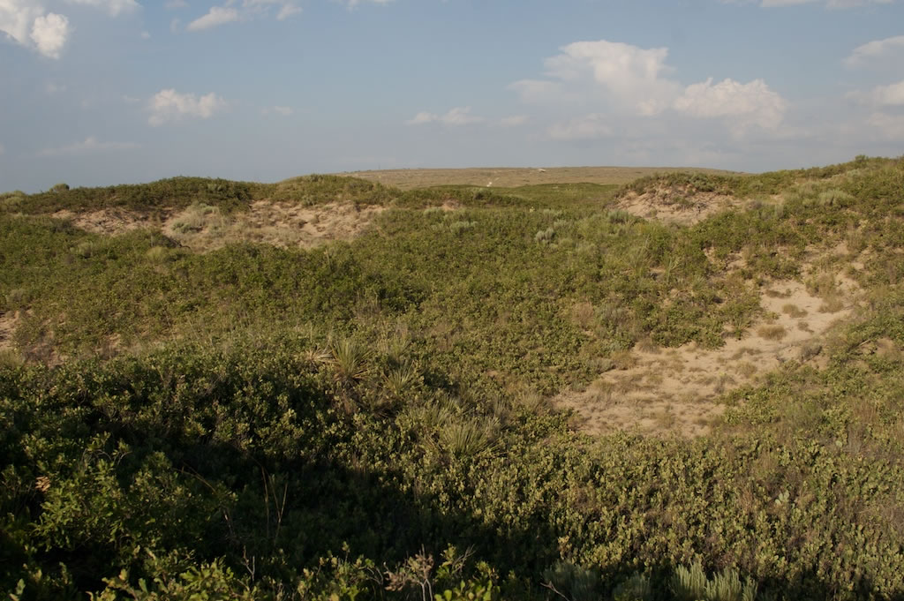

Conservation and landscape genetics of the
Dunes Sagebrush Lizard, Sceloporus arenicolus
|  Above: Shinnery-Oak and sand dune blowouts. | The Dunes Sagebrush Lizard is tied to the shinnery oak dominated sand dune landscape of SE New Mexico and adjacent Texas. They rely on this mosaic of sand dune blowouts (sandy depressions clear of vegetations) and shinnery oak (Quercus havardii) expanses for reproduction and survival. Herbicide treatment and oil and gas mining have altered the landscape considerably. The former converts shinnery oak habitat to grass and mesquite dominated habitat that generally lacks the vegetative cover and microhabitat structure important to S. arenicolus persistence. The wellpad and road construction associated with oil and gas mining destroys and fragments habitat. Below are aerial photographs from Google Earth of (a) intact habitat, (b) habitat once treated with herbicided (light colored patch), and (c) wellpads and roads in suitable S. arenicolus habitat. |